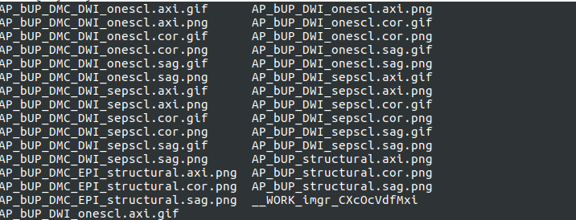
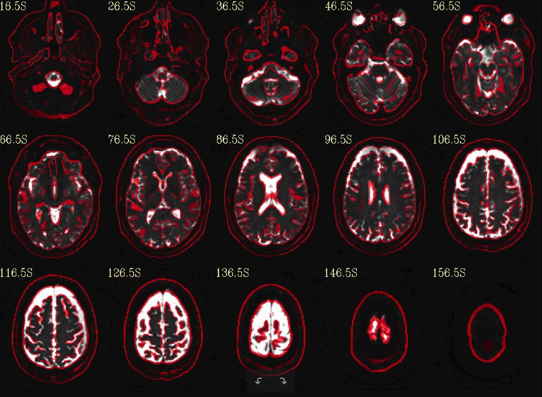
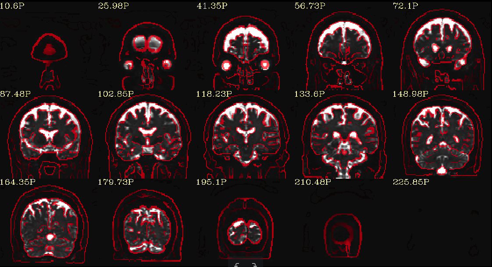
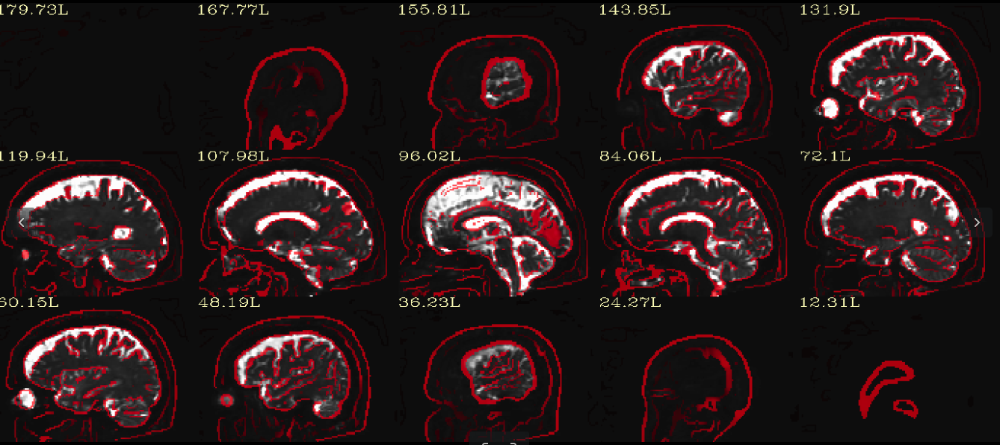

8. DIFFPREP INPUT AND OUTPUT QUALITY CHECK¶
If you have AFNI https://afni.nimh.nih.gov/download installed on your computer, then the QC folder will automatically be generated inside your _proc folder. png and gif files for selected output files (described below) will be generated inside this QC.
The following QC images will automatically be generated when you run DIFFPREP with the do_qc tag switched on. The file name will be the same as the output file names with a png of gif added at the end.
The screenshot below shows an example of outputs generated in the QC folder when running a file name with a prefix AP_bUP
Note
There are gif files also saved for the raw DWI and processed DWI files. These are animated gif files that will play when you open them using any image file viewer. A quick play of the movie, especially in the axial view, will give you an appreciation of eddy motion in raw and its correction in corrected DMC files. Please use this information to understand if the correction has worked effectively on your data. Also, if you notice interleave slice motion within a volume (example shown in the section 11 Quality assessment, please use the suggested steps of remediation. The structural quality check is of importance, as all of the corrections in DIFFPREP and DRBUDDI rely on the information from the structrual. If you notice that the final images are not effectively corrected, it is helpful to have a qc of the structural data used.
Note
If you have used the tag **- -will_be_drbuddied 1 **, then a QC folder will also be created inside the final DRBUDDI output folder where you will find the pngs that show the EPI correction after DRBUDDI.
8.4. EPI DISTORTION CORRECTION QC: Structural (red contour) overlaid on top of the b0 image¶
Axial
Coronal
Sagittal
Note
The EPI pngs generated for DIFFPREP will be in the final oriented space of structural.
Note
The EPI pngs generated for DRBUDDI will be in the space of the ‘up_bo’ space as this QC has been run on the b0_final.nii file and structural used.nii file. Please refer to DRBUDDI section to get more details about the which space each file will be in,during and after processing.
We want to thank the AFNI team and especially Paul Taylor for developing this valuable qc tool and incorporating our TORTOISE specific requirements into it. You can run the fat_proc scripts independantly from TORTOISE processing, to generate snapshots for data files of interest, that which are not generated automatically in the QC folder.